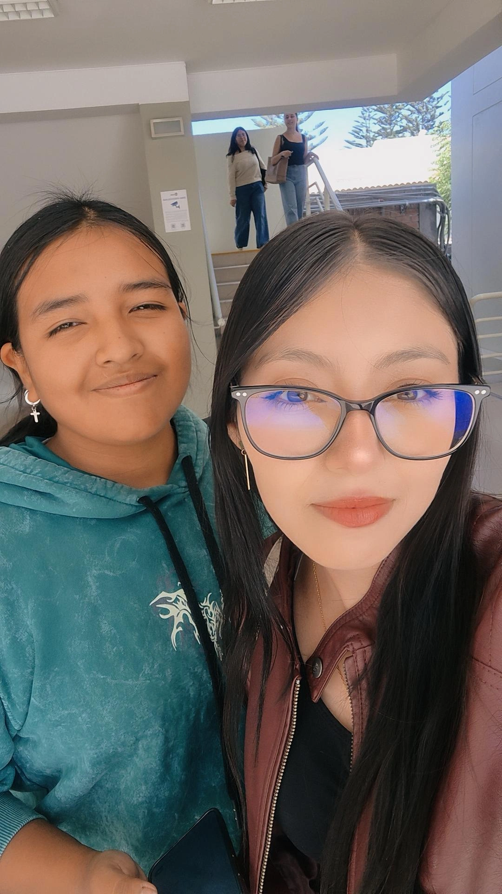
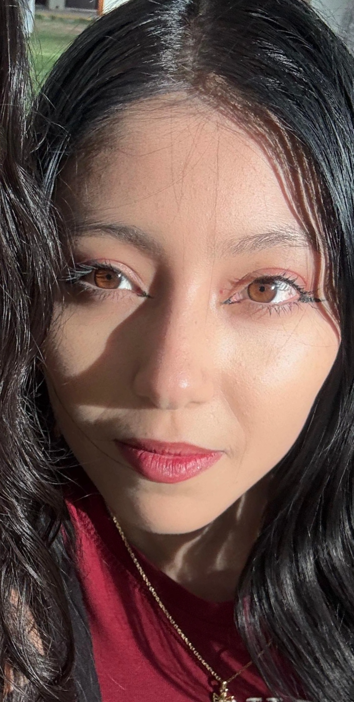

Perfil
Hola, soy Fernanda, estudiante de Ciencia de la Computación en la UCSP. Me interesa el desarrollo web, la ingeniería de software y resolver problemas con código ordenado y fácil de entender.
Formación
Actualmente estudio Ciencia de la Computación en la Universidad Católica San Pablo (UCSP), en Arequipa.
Profesor
Mi profesor es Ernesto Cuadros Vargas. Puedes ver su página aquí: socios.spc.org.pe/ecuadros.
LinkedIn: Ernesto Cuadros Vargas
Competencias
- C++
- Python
Proyectos
Base de datos en Programación Orientada a Objetos
Proyecto del curso de Programación Orientada a Objetos, donde hice una base de datos.
El código está en mi GitHub.
Galería


Compañeros
Contacto
- Correo: fernanda.zuniga@ucsp.edu.pe
- GitHub: Fernandagzcj
- LinkedIn: Fernanda Zuñiga